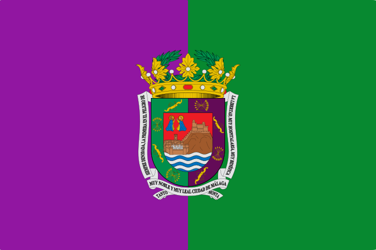
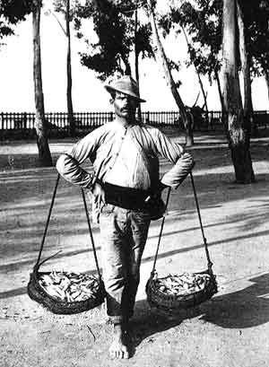
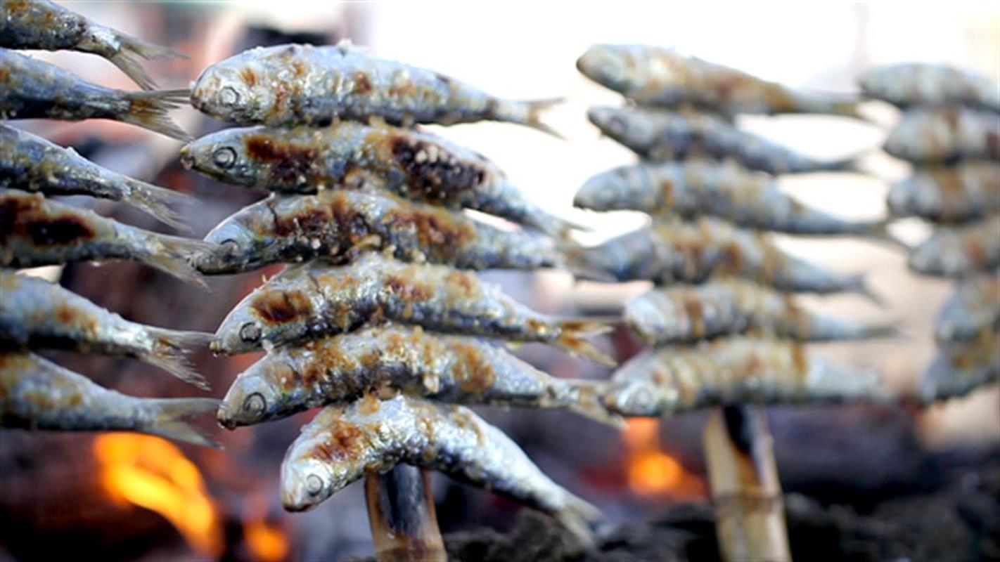

Malaga la bella
Málaga es una ciudad y un municipio de España, capital de la provincia homónima y ubicada en la comunidad autónoma de Andalucía.
Con una población de 570.006 habitantes en 2017,8 Málaga es la sexta ciudad más poblada de España, la segunda de Andalucía y la número cuarenta y seis de la Unión Europea, así como la mayor de entre las que no son capitales autonómicas.
Del mismo modo, es la ciudad costera más grande y poblada del sur de España.
Además, es la zona urbana más densamente poblada de la conurbación formada por el conjunto de localidades que se sitúan a lo largo de 160 km de la Costa del Sol y el centro de un área metropolitana, que sobrepasa sus límites municipales,
abarcando otros 12 municipios que suman 987.813 habitantes censados. Se estima, no obstante, que Málaga es la quinta área metropolitana de España. Donde viven más de 1 millón de personas.
Está situada en el extremo oeste del mar Mediterráneo y en el sur de la península ibérica, a unos 100 km al este del estrecho de Gibraltar. Su término municipal ocupa una extensión de 398,25 km² que se extienden sobre los Montes de Málaga y el Valle del Guadalhorce.
La ciudad está situada en el centro de una bahía rodeada de sistemas montañosos. Dos ríos, el Guadalmedina y el Guadalhorce, la atraviesan desembocando en el Mediterráneo.
Fundada por los fenicios en el siglo VIII a. C., lo que la convierte en una de las ciudades más antiguas de Europa, Málaga fue un municipio primero federado y luego de derecho latino del Imperio romano,
y una próspera medina andalusí cuatro veces capital de su propio reino, que fue incorporada a la Corona de Castilla en 1487.
Durante el siglo XIX la ciudad experimentó una destacable actividad industrial y revolucionaria que la situó como primera ciudad industrial de España y la hicieron merecedora de los títulos «Siempre denodada» y «La primera en el peligro de la libertad»,
el escenario de uno de los episodios más sangrientos de la Guerra Civil Española y protagonista de la explosión del boom turístico de las décadas de 1960 y 1970,
Málaga constituye en la actualidad un notable centro de entretenimiento, económico y cultural, y un importante nodo de comunicaciones en el litoral mediterráneo.
Simbologia
La verde y morada, como se conoce a la bandera malagueña, está dividida en dos mitades verticales, la parte izquierda de color púrpura y la derecha de color verde, con el escudo de la ciudad en el centro. Este contiene en campo de azul una villa sobre unas peñas con un puerto en lo bajo, todo sobre ondas de mar de plata y azul; en cantón diestro de jefe, dos figuras que simbolizan a los patronos de la ciudad: San Ciriaco y Santa Paula; bordura partida de púrpura y sinople, cargada con cuatro haces de cinco flechas empuñadas por un yugo todo ello de plata y un ramo del mismo metal, alternando. El Timbre es una corona real abierta.

A partir del año 2005, el Ayuntamiento optó por representarse a través de un emblema a partir del escudo simplificado, buscando una mayor funcionalidad y adaptarse más a las nuevas tendencias en diseño gráfico.
Ambos símbolos coexisten, pudiendo encontrar indistintamente el escudo o el emblema en base al tipo de evento o publicación en el que se represente.
El lema y títulos otorgados a Málaga son primera en el peligro de la Libertad, la muy Noble, muy Leal, muy Hospitalaria, muy Benéfica y siempre Denodada Ciudad de Málaga
.
A nivel popular, la creación lírica le ha otorgado el sobrenombre de la bella, mientras que diferentes canciones han venido apodando a la ciudad como bombonera debido a su orografía, enclavada entre montes.
Los patronos de Málaga son los mártires Ciriaco y Paula y la Virgen de la Victoria.
El emblema popular y turístico que caracteriza a Málaga es la estatua de El Cenachero, que representa al desaparecido oficio popular malagueño de cenachero, vendedor callejero de pescado.

La flor que simboliza a Málaga es la biznaga, realizado con jazmín, siendo el biznaguero otro personaje popular que se dedicaba a vender biznagas en la calle.
Otros símbolos populares son el boquerón y los espetos de sardinas, pescado típico de la ciudad,
y la Cerveza Victoria, fabricada en Málaga desde 1928, que se autodenominaba malagueña y exquisita.
Urbanismo
Tres son los condicionantes físicos que han marcado la trayectoria urbana de Málaga: el mar Mediterráneo, el río Guadalmedina y la cercanía de los Montes de Málaga.
De hecho, la zona oriental de la ciudad es una estrecha y larga franja de terreno encerrada entre el mar y el monte.
Durante los siglos XVIII y XIX se configura el grueso de lo que se conoce como Centro Histórico, al este del río Guadalmedina. Se caracteriza por tener trazado irregular herencia de la época musulmana.
Entre sus edificios se mezclan las viviendas con varios siglos de antigüedad, con distinto grado de conservación, algunas de ellas en ruinas o en proceso de restauración, con edificios decimonónicos y otros de reciente construcción.
En las barriadas del este, con excepción del barrio de la Malagueta, predominan las viviendas unifamiliares, que van desde las casas tradicionales de los pescadores, a villas con jardines en los barrios de Pedregalejo y El Limonar,
herencia de la burguesía industrial del siglo XIX.
En el extremo oriental se sitúa el popular barrio de El Palo, viejo enclave que ha conservado en parte la imagen de la Málaga tradicional, mediterránea y marinera.
Division administrativa
La ciudad se divide en 11 distritos administrativos, coordinados por Juntas Municipales de Distrito, que a su vez se subdividen en barrios o polígonos industriales.
- Centro
- Este
- Ciudad Jardín
- Bailén-Miraflores
- Palma-Palmilla
- Cruz de Humilladero
- Campanillas
- Puerto de la Torre
- Teatinos Universidad
Ciudades Hermanadas
Actualmente, Málaga está hermanada con:
- Tiro (Líbano)
- Passau (Alemania)
- Popayán (Colombia)
- Zacatecas (México)
Gastronomia
La cocina malagueña es un compendio de toda la gastronomía de la provincia y se encuadra dentro de la dieta mediterránea.
Los Espetos de Sardinas, los boquerones, tanto fritos como en vinagre, y el pescaíto frito hecho a base de boquerones, jureles, salmonetes, pulpo o calamares, son los platos más típicos,
pero también cabe mencionar la cazuela de fideos, el gazpacho, el gazpachuelo, las migas, la ensalada malagueña, el ajoblanco y la porra antequerana, entre otros.
Málaga es conocida por sus vinos dulces que se producen desde la antigüedad. Estos vinos están protegidos bajo la Denominación de Origen Málaga y Sierras de Málaga.
Además, también son tradicionales el Ron de Málaga y el brandy.

Artesanía
Se producen de forma artesanal alfombras, artículos de cuero, esparto, palma, piel y pita, bordados, castañuelas, cera, cerámica, encuadernación, guitarras, joyería, juguetería, metal, muebles de madera,
parafina, talla de mármol, trabajos textiles y vidrio.
La tradición ceramista en Málaga se consolidó durante la época andalusí, con la llamada cerámica dorada, aunque sus orígenes son mucho más antiguos.
Cabe destacar la representación de figuras y personajes típicos de la localidad y la alfarería con vasijas, macetones o candiles.
La ebanistería goza de gran reconocimiento y aún existe un buen número de talleres artesanos dedicados a la elaboración y restauración de muebles, instrumentos musicales y otros objetos diversos.
Asimismo, la ciudad tiene una gran tradición en el trabajo del metal, especializado en la cerrajería artística que frecuentemente se exporta a Oriente Medio.
Mención aparte merecen los Astilleros Nereo, dedicados a la construcción de barcos tradicionales como la jábega, y que están en proceso de ser declarados actividad de interés etnológico por la Junta de Andalucía.